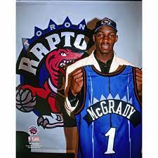
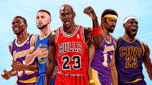

|
Introduction Basketball has always been my favourite sport from a young age. I got a chance to try out many different sports, but for some reason basketball has stuck with me to be the most enjoyable. I like the fact that it is a team sport and must play as a unit to have success. Another aspect of the game that I like is that you must play both offense and defense all the time, rather than one or the other like in american football. |

|
Favourite TeamI have always been a hometown fan of the Toronto Raptors. It is the only team left in Canada. There was another team based out in Vancouver called the Grizzlies but they relocated to Memphis. Growing up I got a chance to go to a few games and I was hooked. It is an exciting environment and everyone in the arena is in a great mood to celebrate and cheer on the Raptors. Growing up there was another Canadian team called the Vancouver Grizzlies. They were very exciting to watch. I found they had a great logo and fan base. For whatever reason the team was relocated to Memphis. Because of this move this only left one team in Canada, the Toronto Raptors |
|  |
Favourite PlayersGrowing up my favourite player was Tracy Mcgrady. He was a young star who played for the Toronto Raptors. He was exciting to watch and was very skilled. I would even buy his sneakers and jersey so I could emulate this style of play. Unfortaunetly he was traded to another team and had issues with injury. His career was short lived and was unfortunate for fans such as myself. |
|  |
NBA HistoryThe NBA is an AMerican profressional basketball league. It consists of 30 teams. Only one team is home to canada the Toronto Raptors. It started off as two leagues competiting for american dominance. On August 3, 1949, after a damaging three-year battle to win both players and fans, the rival Basketball Association of America (BAA) and National Basketball League (NBL) merged to form the National Basketball Association (NBA). |